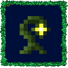

A fun project designed as a mod for the popular sandbox game, "Terraria". This project gave me experience working with large scale APIs, C# projects, and bigger picture OOP design. It was my first big project that I took on and is still being worked on to this day to maximize content and efficiency.

A work in progress game that I am developing based on the MonoGame framework. The engine is being designed from scratch to support a wide range of different features. The game will feature many complicated elements including dynamic/moving scenes and the nested scope of many environments (ex. from character to ship to space)